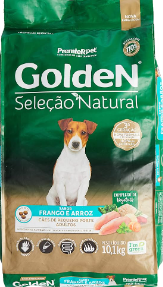
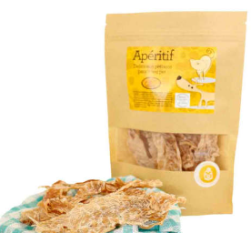
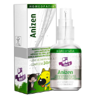
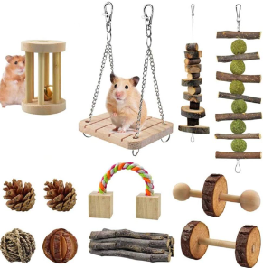

Nossos Produtos
Ração Natural
Nossas rações naturais são feitas com ingredientes frescos e nutritivos, sem adição de conservantes artificiais. São formuladas para atender às necessidades específicas de cada pet, considerando idade, raça, porte e estilo de vida.
Petiscos Naturais
Oferecemos uma variedade de petiscos naturais, deliciosos e saudáveis. Feitos com ingredientes selecionados, são perfeitos para recompensar seu pet sem comprometer sua saúde.
Remédios Homeopáticos
Nossos remédios homeopáticos são formulados para tratar e prevenir diversas condições de saúde de forma natural, sem efeitos colaterais. Ideais para pets sensíveis a medicamentos convencionais.
Acessórios
Temos uma ampla gama de acessórios para pets, incluindo coleiras, brinquedos, camas e muito mais. Todos os produtos são feitos com materiais de alta qualidade para garantir o conforto e a segurança do seu pet.